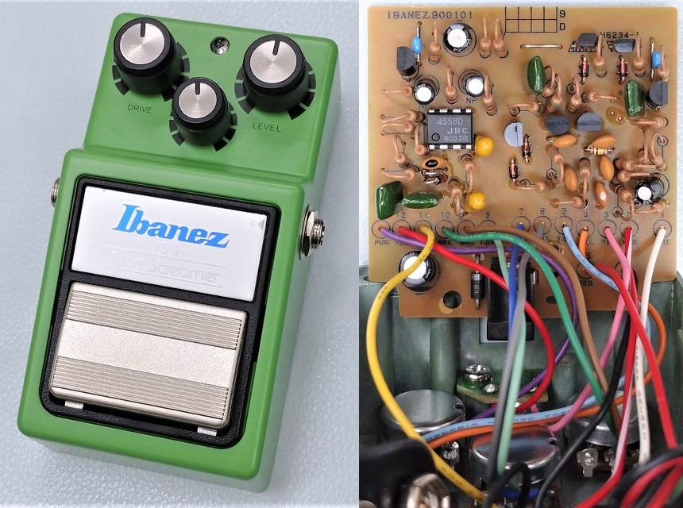
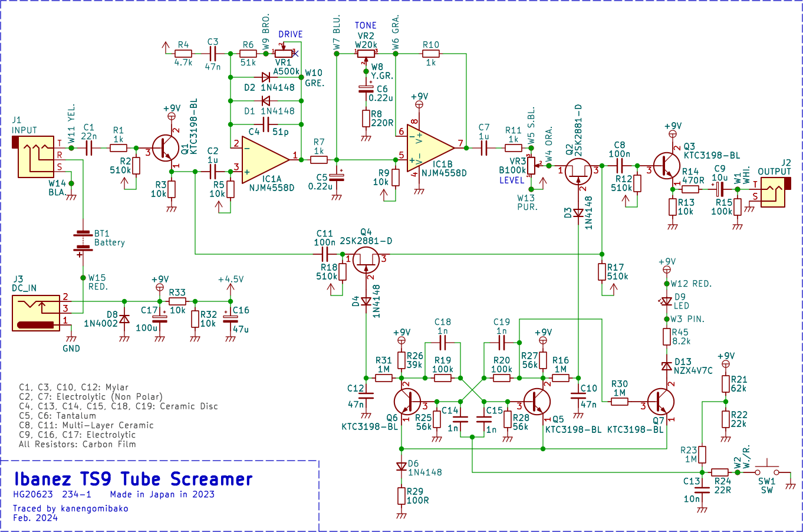
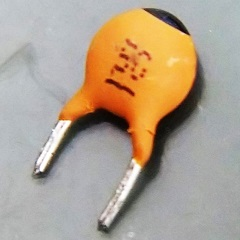
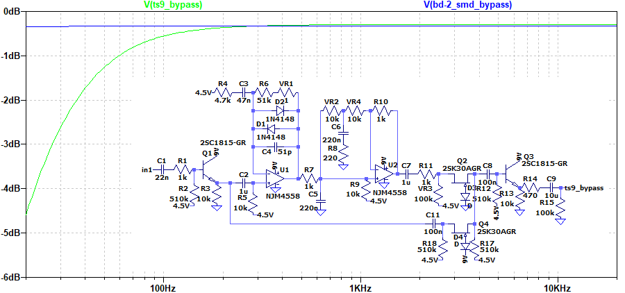
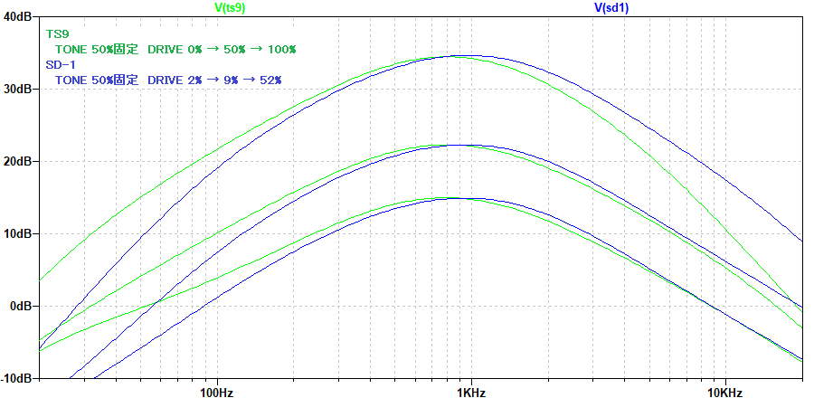
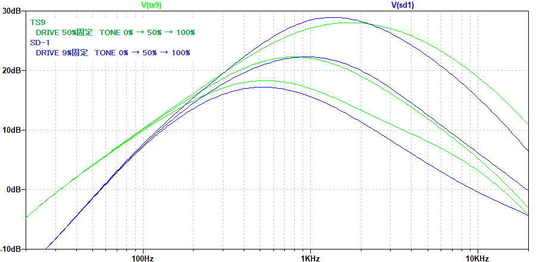
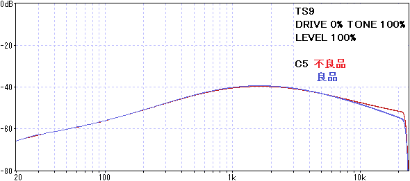

Ibanez TS9 Tube Screamer 解析
2024年03月30日 カテゴリー：修理・改造・解析

BD-2等のBOSSエフェクターは、スルーホール部品（THD）ではなく表面実装部品（SMD）が使われているものへ移行が進んでいます。最新のチューブスクリーマーでは何か変化があるのかどうか、TS9を調べてみることにしました。KiCadデータ（基板画像入り）とLTspiceの回路図データはGitHubにあります。
下記ブログ記事では2017年時点でのTS9の内部を見ることができます。今回私が購入した個体（おそらく2023年以降に製造）とほぼ同じです。
・ギターダー ～工房の片隅で～ - TS9の現行モデルを購入したぞ。(その1) (その2) (その3)
現行のTS9は、元々1982年に発売されたTS9を復刻したリイシュー･モデルです（英語版公式サイトで「reissue」の表記あり）。スルーホール部品や多数の配線は製造上非効率的なように感じられますが、今後もこのまま当時を再現した仕様で販売され続けると思われます。
▽回路図

スルーホール部品は製造中止になるものが多く、代替品をどう選ぶかが問題になります。ダイオードはonsemi製の1N4148となっています。KTC3198は、KECという韓国東芝として設立された会社が製造している2SC1815互換品です。2SK2881は2SK30A互換品というわけではないので、現行生産の信頼できるスルーホール部品として選ばれたのでしょう。
ある時期（MAXON製からIbanez製に移行したとき？）から、C8とC11が積層セラミックコンデンサ（MLCC）に変わっています。音響機器のカップリングコンデンサにMLCCを使うことは通常望ましくないので、わざわざこのような変更があるのは珍しいように思います。
C4については印字がかすれていて読めず、とりあえず51pFとしています（実測49pF）。50pFか56pFかもしれません。

回路の詳細に関してはすでに素晴らしい解説があります。下記リンク先をご参照ください。
・GEO - The Technology of the Tube Screamer
・ElectroSmash.com - Tube Screamer Analysis
▽シミュレーション
- バイパス音

BD-2（SMDバージョン）との比較です。SMD版になってアップデートされたBOSSのバッファではほぼフラットですが、TS9ではやや低音域の低下が見られます。
- DRIVE、TONE


BOSS SD-1との比較です。ゲイン・音量は同じくらいになるように調整してあります。SD-1はDRIVEポットが1MΩのBカーブなので、より歪みやすく感じられます。また、SD-1の方が低音域のカットが大きいです。
下記ページではTS808とSD-1が詳細に比較・解析されています。
・Tube Screamer Like Pedals
実測した周波数特性がシミュレーションとズレていたため調査すると、タンタルコンデンサC5が原因だとわかりました。高い周波数での静電容量の低下が大きくなっています。おそらく珍しい不良だと思いますが、同じ不具合に遭遇する方がいるかもしれないので報告しておきます。
